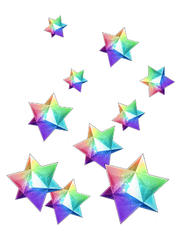
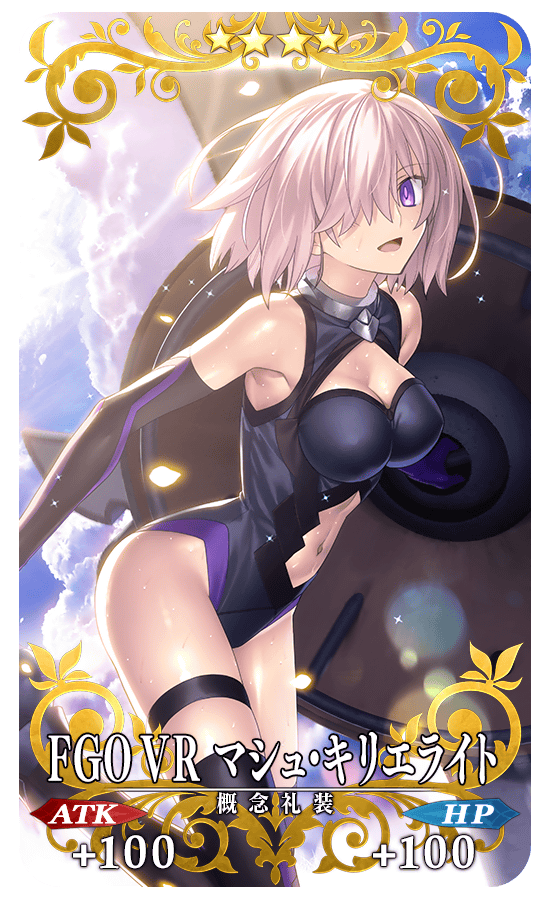
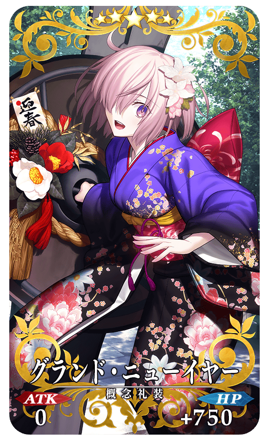
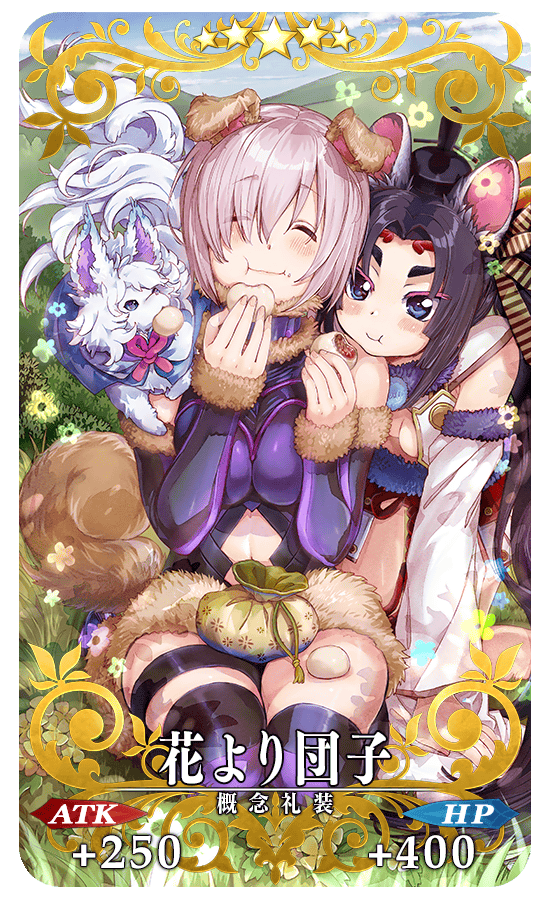
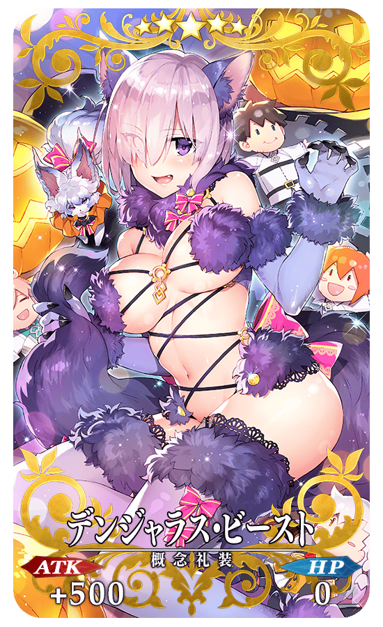
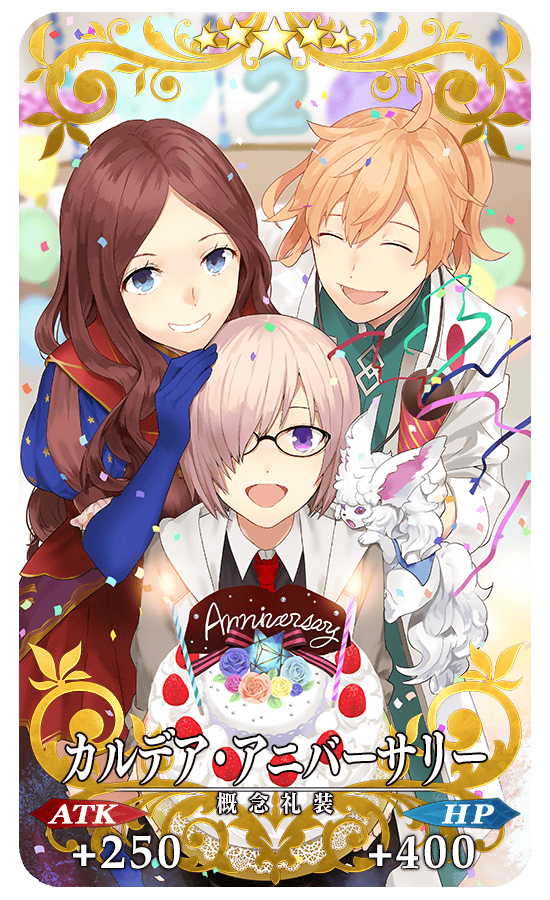
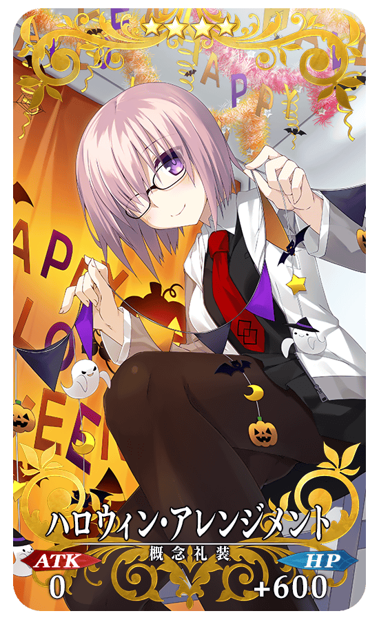

◆舉辦期間◆
2017年11月28日(二) 21:00～12月13日(三) 11:59
◆宣傳活動概要◆
為了記念預定自2017年12月6日(三)「Fate/Grand Order VR feat.瑪琇・基利艾拉特」的配信，實施「Fate/Grand Order VR feat.瑪琇・基利艾拉特配信記念宣傳活動」。
|
在下述的期間中登入的話，贈送聖晶石10個！ ◆舉辦期間◆ ◆プレゼント對象◆ |
 |

在迦勒底之門，通過下述的期間中出現的「Fate/Grand Order VR feat.瑪琇・基利艾拉特」配信記念關卡，得到關卡限定的概念禮裝吧！
※請注意在「Fate/Grand Order VR feat.瑪琇・基利艾拉特」配信記念關卡並無劇本。
◆舉辦期間◆
2017年11月28日(二) 21:00～12月13日(三) 11:59
◆關卡開放條件◆
通過「特異點F 炎上汙染都市 冬木」的Master對象
◆「Fate/Grand Order VR feat.瑪琇・基利艾拉特」配信記念關卡限定概念禮裝◆
|  |
★★★★SR |
◆「FGO VR feat.瑪琇・基利艾拉特配信記念Pick Up召喚」期間◆
期間:2017年11月28日(二) 22:00～12月13日(三) 12:59まで
舉辦期間限定「FGO VR feat.瑪琇・基利艾拉特配信記念Pick Up召喚」！
※未通過「特異點F 炎上汙染都市 冬木」的狀態也能進行「FGO VR feat.瑪琇・基利艾拉特配信記念Pick Up召喚」。
這次從描繪瑪琇・基利艾拉特描的概念禮裝中，以期間限定復刻Pick Up「★5(SSR)グランド・ニューイヤー」「★5(SSR)花より団子」「★5(SSR)デンジャラス・ビースト」「★5(SSR)カルデア・アニバーサリー」「★4(SR)ハロウィン・アレンジメント」！
※グランド・ニューイヤー、花より団子、デンジャラス・ビースト、カルデア・アニバーサリー、ハロウィン・アレンジメント在Pick Up期間結束後不會追加到故事召喚。
※從「FGO VR feat.瑪琇・基利艾拉特配信記念Pick Up召喚」出現的Servant與故事召喚是相同的。另外，隨著章節的進行而追加的Servant為召喚對象外。
詳情請在聖晶石召喚畫面左下的召喚詳細確認。
Pick Up期間中，期間限定概念禮裝的出現機率提升！
10次召喚中確定1張★4(SR)以上和確定1位★3(R)以上的Servant！
※確定★4(SR)以上包含Servant和概念禮裝。
※所謂「出現機率提升」意指比同稀有度的Servant及概念禮裝出現機率更高的設定。
|  |
★★★★★SSR |
|  |
★★★★★SSR |
|  |
★★★★★SSR |
|  |
★★★★★SSR |
|  |
★★★★SR |